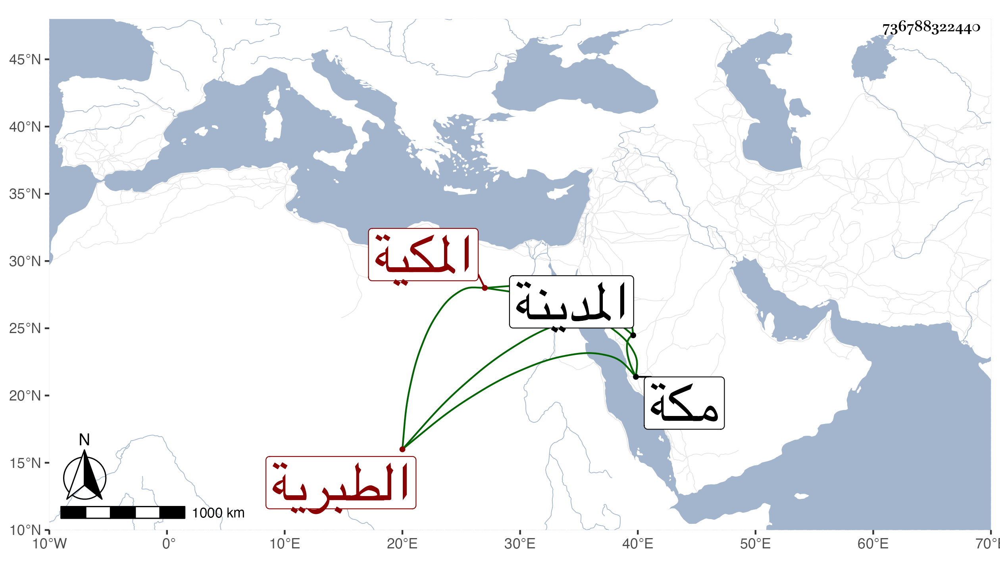

0902Sakhawi.DawLamic.ITO20230111-ara1.EIS1600.736788322440
Biography ID: 736788322440
141
خديجة المدعوة موفقية ابنة الشهاب أحمد بن النجم محمد بن الجمال محمد ابن المحب أحمد بن عبد الله بن محمد بن أبي بكر بن محمد بن إبراهيم أم الفضل ويقال لها أم خليل الطبرية المكية، وأمها أم الخير عائشة ابنة أحمد بن الرضى إبراهيم ابن محمد الطبري . ولدت ظنا سنة أربعين وسبعمائة وسمعت من جدتها لامها حسنة ابنة محمد بن كامل بن يعقوب ، وأجاز لها جماعة ؛ وتزوجها الجمال محمد بن العز الأصبهاني ثم ابن عمتها النور على بن أحمد النويري المكي وبانت منه حتى ماتت ولم تلد لأحد منهما ، وجاورت بالمدينة النبوية مرارا وفي بعضها نحو سنتين . وحصل لها في آخر عمرها سقطة ضعفت حركتها بها عن المشي ، وكانت خيرة حشمة ذات مروءة كبيرة ، قال الفاسي وما علمتها حدثت وذكرها التقي بن فهد في معجمه ماتت بمكة في رمضان سنة أربع عشرة .
